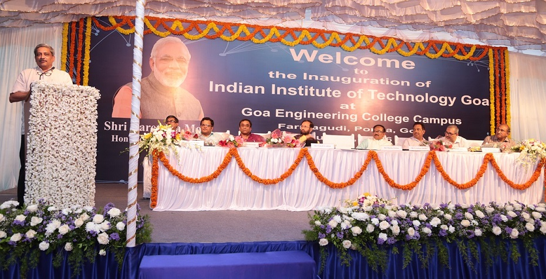

IIT GOA INTERNSHIP SHELL

Indian Institute of Technology Goa (IIT Goa) is an autonomous premier engineering and technology university located in Goa. The new Indian Institute of Technology (IIT) at Goa would start functioning from July, 2016 in a temporary campus housed at Goa Engineering College (GEC) Campus located at Farmagudi, Goa. For the academic year 2016-2017, it will offer B.Tech courses in three core branches namely Electrical, Computer Science and Mechanical.